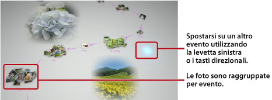

Visualizzare le foto
All'avvio di Photo Gallery, tutte le foto salvate nella memoria di sistema del sistema PS3™ vengono automaticamente analizzate e raggruppate per eventi. Il raggruppamento per eventi viene effettuato in base alla data e all'ora in cui le foto sono state scattate.
Selezione degli eventi
Utilizzare la levetta sinistra o i tasti direzionali per passare da una foto all'altra o da un evento all'altro. È possibile selezionare più foto o eventi premendo il tasto  ad ogni selezione.
ad ogni selezione.

Modifica delle modalità di visualizzazione delle foto
Per modificare la modalità di visualizzazione delle foto, selezionare gruppi o eventi e quindi premere il tasto  . La visualizzazione cambia come illustrato nelle immagini seguenti. Per tornare alla visualizzazione precedente, premere il tasto
. La visualizzazione cambia come illustrato nelle immagini seguenti. Per tornare alla visualizzazione precedente, premere il tasto  .
.
Nota
Quando una foto è visualizzata a schermo intero, è possibile accedere al pannello di controllo nella categoria  (Foto) della schermata XMB™ premendo il tasto
(Foto) della schermata XMB™ premendo il tasto  . È quindi possibile utilizzare le opzioni disponibili nel pannello di controllo sulla foto visualizzata.
. È quindi possibile utilizzare le opzioni disponibili nel pannello di controllo sulla foto visualizzata.
Visualizzare le immagini in formato galleria
Per visualizzare le immagini in formato galleria, selezionare un elenco di riproduzione o un evento dalla schermata [Area raccolta], premere il tasto , quindi selezionare  (Galleria). Dalla schermata visualizzata, impostare le opzioni descritte di seguito per la galleria, quindi selezionare [Avvia].
(Galleria). Dalla schermata visualizzata, impostare le opzioni descritte di seguito per la galleria, quindi selezionare [Avvia].
| Stile della galleria | Seleziona la modalità di visualizzazione delle foto nella galleria. |
|---|---|
| Velocità di scorrimento | Seleziona la velocità di scorrimento della galleria. |
| Ordina | Seleziona l'ordine delle foto. |
| Musica per galleria | Seleziona la musica da riprodurre in sottofondo durante la galleria dal contenuto musicale fornito con l'applicazione Photo Gallery. |
 |
Seleziona la musica da riprodurre in sottofondo durante la galleria dalla categoria  (Musica) nella schermata XMB™. (Musica) nella schermata XMB™. |
Note
- Durante una galleria, è possibile accedere al pannello di controllo per la categoria (Foto) premendo il tasto . È quindi possibile applicare le opzioni disponibili del pannello di controllo alla galleria.
- Quando le foto sono visualizzate nella schermata [Area raccolta], è possibile selezionare [Similarità] sotto [Ordina] per ordinare le foto in base alle somiglianze fra le immagini.
Modificare la musica di sottofondo
È possibile modificare la musica riprodotta in sottofondo durante la visualizzazione delle foto. Premere il tasto PS sul controller wireless per visualizzare la schermata XMB™, aprire (Musica), quindi selezionare il file musicale che si desidera riprodurre.
Note
- Per modificare la musica di sottofondo di una galleria, selezionare il file musicale desiderato prima di avviare la galleria.
- Utilizzando Photo Gallery, se si seleziona come musica in background un brano musicale salvato su un supporto di memorizzazione e quindi si avvia la galleria, è possibile che il brano non venga riprodotto nuovamente una volta che la galleria è terminata.